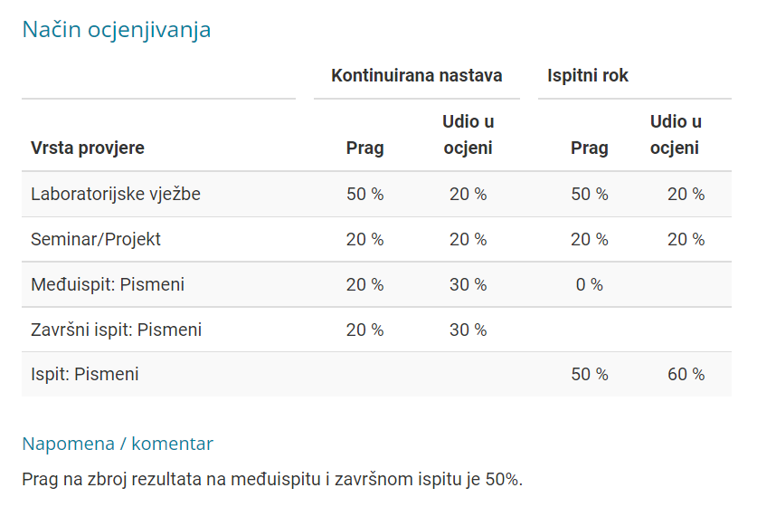

bjunolulz 5 ljudi po projektu, najbolje je što prije se dogovoriti, zadnja 2 tjedna se održavaju prezentacije, teme sami odabirete ili odabereš nešto što je ponuđeno na stranicama predmeta.
Jel ovaj predmet ima ograničenje na broj studenata?
zmaj Nema. Barem ove godine nije imao, a koliko znam, nije ni prijašnjih.
Just in case da mi niko ne odgovori na gornji post, ima li nadoknada iz labosa s obzirom da ništa ne piše na prezentaciji?
ima li snimki predavanja/auditornih na internetu? danas na 1. labosu mi je asistent nesto objasnjavao pa je rekao “ako ste bili na auditornima ili gledali snimku” pa nisam siguran na sto misli
Daeyarn ima koliko znam na engleskim stranicama predmeta snimke auditornih
PlavušaSFilozofskog nasao sam, mislim da ima cak i predavanja na engleskom snimljenih hvala😃
🤡 Bump. Što se zadnje radilo na predavanjima? Je li segmentacija slike zadnje ili?
Zadnje smo zapoceli segmentaciju slike. Ali na popisu tema za meduispit sto ima na ferwebu pise da zadnje ulazi obnavljanje slike + primjeri prakticnih primjena
nekoIme Ali na popisu tema za meduispit sto ima na ferwebu pise da zadnje ulazi obnavljanje slike + primjeri prakticnih primjena
Poslala sam mail asistentu i pitala za gradivo MI i za taj file. To je neki stari file i ne treba se voditi njime. Zadnje što u MI ulazi je ekstrakcija značajki. Segmentacija slike ne ulazi jer to nismo do kraja obradili.
Emma63194 Znaci na onoj prezentaciji od auditornih feature extraction ne ulazi onaj dio sa image segmentation i hough transform?
Prag na MI je 20%?
BillIK da  i prag na MI + ZI je 50%
Daeyarn toga nema u uvodnom predavanju 😠
BillIK onda mozda i nije, al se sjecam da je prosli semestar bilo tak na neuronskim mrezama(predmeti su bodovno identicno organizirani) pa sam paranoican od tad😁😅
E jebem vam boga oca
ako imamo zelenu zastavicu iz labosa, trebamo li predati i 4. vježbu?
Vidi li itko na koji dan je završni? Pisalo ni je u kalendaru i nmg više viditi išta od prije par dana. Sjećam se da je bio u 2. tjednu samo ne znam koji dan i kada.
iNut ni meni vise nema, ali ako se dobro sjecam pisalo mi je u kalendaru cetvrtak 23.6. 8:30